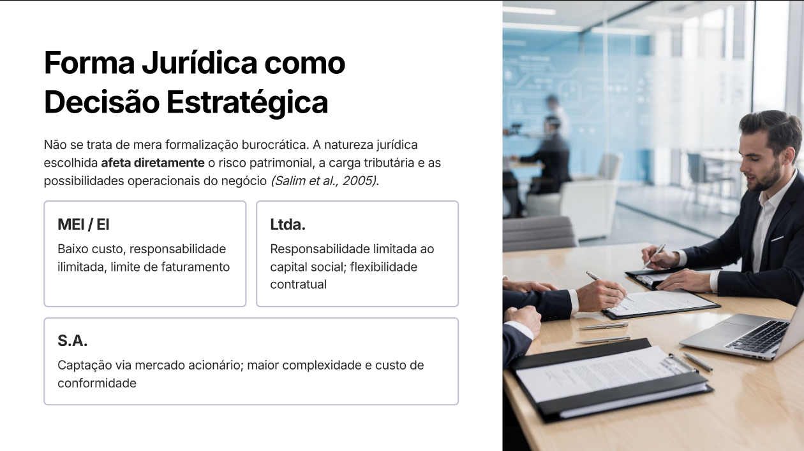
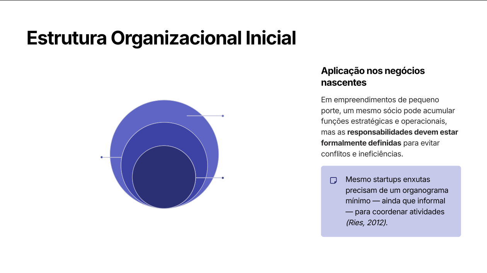
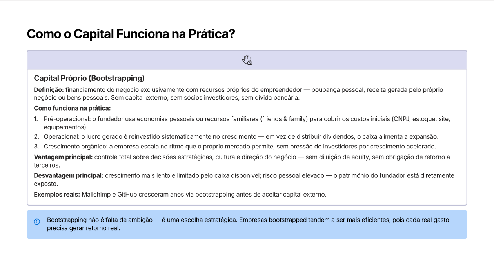
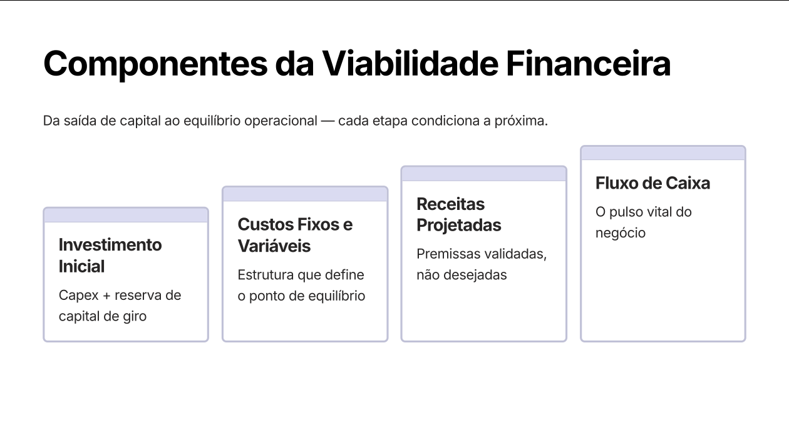

SEBRAE (2022): 48% das MPEs encerram antes de 3 anos, frequentemente por ausência de formalização e controle gerencial — não por falta de demanda.
Capítulo 2
Formas jurídicas — MEI, EI, Ltda, S.A.
A escolha da forma jurídica não é mera burocracia. Ela afeta diretamente o risco patrimonial, a carga tributária e as possibilidades operacionais.

A natureza jurídica é uma decisão estratégica (Salim et al., 2005).
Principais formas
Forma
Características
Quando faz sentido
MEI (Microempreendedor Individual)
Mais simples. Faturamento até R$ 81 mil/ano (limite atual; pode mudar). Responsabilidade ilimitada.
Início de carreira solo, baixo investimento, atividades permitidas pela tabela MEI.
EI (Empresário Individual)
Sem separação patrimonial — responsabilidade ilimitada. Sem sócios.
Atividade individual, faturamento maior que MEI.
Ltda (Sociedade Limitada)
Responsabilidade limitada ao capital social. Flexibilidade contratual. Sócios podem ser PF ou PJ.
A grande maioria dos negócios com mais de um sócio.
S.A. (Sociedade Anônima)
Capital dividido em ações. Maior complexidade e custo de conformidade. Permite captação via mercado acionário.
Empresas que projetam captação de investidores ou IPO.
Uma startup de tecnologia que projeta captação de investidores deve optar por S.A. (ou modelos como Ltda transformável), mesmo com maior custo de conformidade — porque a estrutura permite emissão de ações e vesting formal.
Responsabilidade limitada × ilimitada
Ilimitada (MEI, EI) — o patrimônio pessoal do empreendedor pode ser usado para pagar dívidas da empresa.
Limitada (Ltda, S.A.) — em regra, o patrimônio pessoal é protegido; só o capital social responde.
Capítulo 3
Regimes tributários
O regime tributário define como e quanto a empresa paga em impostos. Errar a escolha pode custar caro.
Regime
Característica
Faturamento limite
Simples Nacional
Unifica até 8 tributos em uma única guia (DAS). Alíquota varia por atividade.
Até R$ 4,8 milhões/ano
Lucro Presumido
Imposto calculado sobre presunção do lucro a partir do faturamento. IRPJ e CSLL fixos.
Até R$ 78 milhões/ano
Lucro Real
Imposto sobre o lucro efetivamente apurado. Obrigatório para faturamentos altos ou setores específicos.
Sem limite (obrigatório acima de R$ 78 mi)
Para a maioria das MPEs, o Simples Nacional é o regime estratégico — reduz complexidade e geralmente diminui a carga tributária.
Estrutura societária
Quem são os sócios? Qual a participação de cada um? Quais as responsabilidades? Essas definições devem estar no contrato social (ou estatuto, em S.A.).
Capítulo 4
Estrutura organizacional e áreas funcionais
"A ausência de estrutura formal não elimina a estrutura — ela apenas a torna informal, imprevisível e ineficiente." — Mintzberg (2003).

Estrutura organizacional define como autoridade, tarefas e recursos são distribuídos (Maximiano).
A estrutura organizacional define como autoridade, tarefas e recursos são distribuídos na empresa.
Dimensões organizacionais
Divisão de responsabilidades — quem decide, quem executa, quem controla.
Áreas funcionais — operações, finanças, marketing, gestão de pessoas.
Autoridade e coordenação — cadeia de comando, mecanismos de integração.
Fluxo de decisão — rotinas mínimas para evitar a improvisação.
Áreas funcionais mínimas (Dornelas, 2021)
Área
Conteúdo
Operações
Produção, entrega, controle de qualidade
Finanças
Fluxo de caixa, contabilidade, controle orçamentário
Marketing / Comercial
Aquisição de clientes, vendas, marca
Gestão de Pessoas
Recrutamento, capacitação, cultura
Erros comuns
Abertura sem definição de papéis gera:
❓ Quem decide? Ausência de autoridade clara → conflitos e paralisia.
❓ Quem executa? Sobreposição de funções → baixa produtividade.
❓ Quem controla? Sem controle, desvios passam despercebidos.
❓ Quem responde? Indefinição de responsabilidade legal expõe sócios ao risco patrimonial.
Mesmo startups enxutas precisam de um organograma mínimo — ainda que informal — para coordenar atividades (Ries, 2012).
Capítulo 5
Fontes de financiamento
A pergunta real não é quanto captar, mas de quem captar — e a que custo. Cada fonte implica uma cessão diferente: dinheiro, controle ou tempo.

As principais opções se dividem entre controle, dívida, escala e comunidade.
Os 4 grupos de fontes
Fonte
O que é
Vantagem
Desvantagem
Capital Próprio (Bootstrapping)
Recursos do próprio empreendedor — poupança, lucro reinvestido, family & friends
Controle total, sem diluição
Crescimento lento, risco pessoal elevado
Capital de Terceiros (Dívida)
Empréstimos bancários, financiamentos
Mantém equity (controle)
Obrigação de pagamento fixo + juros
Capital de Risco (Equity)
Cessão de participação em troca de aporte (Angel, VC, Private Equity)
Acelera escala, traz mentoria e rede
Diluição do controle e do lucro
Crowdfunding
Captação coletiva via plataformas digitais
Valida demanda antes da escala
Exige campanha forte e entrega das recompensas
Bootstrapping em detalhes
Como funciona:
Pré-operacional: economias pessoais ou family & friends cobrem custos iniciais (CNPJ, estoque, site, equipamentos).
Operacional: o lucro é reinvestido sistematicamente.
Crescimento orgânico: escala no ritmo que o mercado permite.
Exemplos reais: Mailchimp e GitHub cresceram via bootstrapping antes de aceitar capital externo.
Bootstrapping não é falta de ambição — é uma escolha estratégica que produz empresas mais eficientes.
Capital de Risco (Equity)
Angel Investor — pessoa física, estágios iniciais (seed). Ticket: R$ 50 mil – 500 mil. Oferece mentoria + rede.
Venture Capital (VC) — fundos para startups de alto crescimento. Participação 10-30%. Saída via IPO ou M&A. Ex: Kaszek, Monashees.
Private Equity — empresas maduras, reestruturação/expansão. Horizonte 5-7 anos.
A negociação do valuation (valor da empresa) é o ponto central. Superestimar afasta investidores; subestimar dilui demais o fundador.
Crowdfunding
Recompensa — apoiadores recebem o produto antes do lançamento (Catarse, Kickstarter).
Equity — investidores recebem participação. No Brasil regulado pela CVM (Resolução 88/2022, captação até R$ 15 mi/ano). Plataformas: Eqseed, Kria.
Doação — sem retorno, comum em causas sociais.
Dívida (P2P lending) — empréstimo coletivo com juros.
Capítulo 6
Viabilidade financeira — indicadores
Viabilidade = capacidade do negócio gerar retorno sustentável ao longo do tempo. Avalia-se em três dimensões.
Dimensão
Pergunta
Técnica
É possível operar?
Mercado
Existe demanda real?
Financeira
O caixa sustenta?

Da saída de capital ao equilíbrio operacional.
Componentes da viabilidade financeira
Investimento inicial — Capex + reserva de capital de giro.
Custos fixos e variáveis — estrutura que define o ponto de equilíbrio.
Receitas projetadas — premissas validadas, não desejadas.
Fluxo de caixa — o pulso vital do negócio.
Indicadores essenciais
Indicador
Pergunta que responde
Payback
Em quanto tempo recupero o investimento?
VPL (Valor Presente Líquido)
O projeto cria ou destrói valor hoje?
TIR (Taxa Interna de Retorno)
Qual a rentabilidade intrínseca?
Ponto de Equilíbrio (Break-even)
A partir de quando as receitas cobrem os custos?
O negócio começa a existir quando receita = custos. Antes disso, é um projeto subsidiado por capital próprio ou de terceiros.
Esses indicadores não respondem se o negócio é bom — respondem se é viável nas condições projetadas.
Capítulo 7
Triple Bottom Line e armadilhas
Investidores, reguladores e consumidores avaliam negócios em três dimensões simultâneas. Apenas lucrar não basta.
Triple Bottom Line (Elkington, 1997)
Dimensão
O que avalia
People
Impacto social positivo e responsável
Planet
Operação ambientalmente sustentável
Profit
Retorno financeiro que perpetua o negócio
Erros que destroem negócios
Antes do mercado:
Superestimar receitas — projeções baseadas em desejo.
Subestimar custos — omissão de impostos, inadimplência, retrabalho.
Ignorar o fluxo de caixa — lucro contábil ≠ caixa disponível.
"Negócios quebram por falta de caixa, não por falta de ideia."
A maioria das falências ocorre em negócios lucrativos no papel — mas insolventes na prática. Gestão de fluxo de caixa é competência estratégica, não operacional.
Trade-offs na formalização
A escolha entre alternativas jurídicas e organizacionais envolve tensões:
Simplicidade × Proteção patrimonial — MEI é simples, mas tem responsabilidade ilimitada.
Custo de conformidade × Capacidade de captação — S.A. é cara, mas permite captação via ações.
Velocidade × Solidez institucional — começar informal é rápido, mas trava o crescimento.
Não há solução universal — há adequação estratégica. A escolha ótima depende do porte, modelo de negócio e objetivos de longo prazo.
Síntese — os 3 alinhamentos fundamentais
Legalidade — garante existência, proteção e acesso a mercados formais.
Organização — viabiliza a execução eficiente e o crescimento sustentável.
Alinhamento — a coerência entre forma jurídica, estrutura e estratégia é o diferencial competitivo.
Por que um negócio lucrativo pode quebrar por falta de caixa?
Porque lucro é um conceito contábil que conta receitas e despesas no regime de competência (quando ocorrem), enquanto caixa é o dinheiro disponível na conta no regime de caixa (quando entra e sai). Uma empresa pode ter vendido muito, registrar lucro, mas ainda não ter recebido os pagamentos — enquanto precisa pagar fornecedores, salários e impostos hoje. Sem capital de giro adequado e gestão de fluxo de caixa, o negócio quebra mesmo sendo "lucrativo".
Pronto para o quiz?
Banco com temas, dificuldade e modo "focar nos erros".